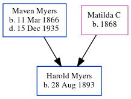

Harold Henry Myers 1893 -
[ Home ] | [ Calendar ] | [ Surnames Index ] | [ Census Index ] | [ Family History ]The eldest of 4 children of Maven Myers and Matilda C, Harold Myers was born in Blakely, Lackawanna, Pennsylvania, USA on Aug 28, 18931,2,3.
During his life, he was living in Lackawanna, Pennsylvania, USA on Jun 1, 19001 and on Apr 15, 19102 (the same place as his parents had been living on Jun 1, 1900). He served in the military from 1917 to 1918 (world War I Draft Registration Cards).
Parents
- Maven was born on Mar 11, 1866
- Matilda C was born in 1868
Citations
- US Census 1900 - Findmypast (was the son of the head of the household)
- US Census 1910 - Findmypast (was age 16 and the son of the head of the household)
- World War I Draft Registration Cards - Findmypast
Media
World War I Draft Registration Cards - USM/WWIDR/1696341920
US Census 1910 - USC/1910/004973422/00008/034
Family Tree
Generated by ged2site. Last updated on Jun 11, 2024